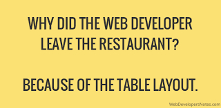

00. Link - Curated collection of useful Javascript snippets that you can understand in 30 seconds or less
01. Link - Mastering Modular JavaScript
02. Link - Flocking
03. Link - Understanding type-checking in JavaScript
04. Link - 16 Hand-Picked JavaScript Podcasts Still Running in 2018
05. Link - 5 Tips to Write Better Conditionals in JavaScript
06. Link - What is Modular CSS?
07. Link - Converting a WebGL application to WebVR
08. Link - Airbnb ECMAScript 6+ (ES 2015+) Styles
09. Link - How to Build a Low-tech Website?
